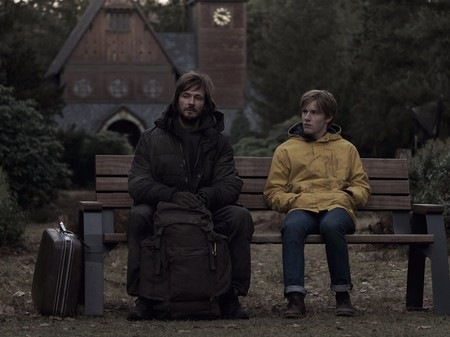
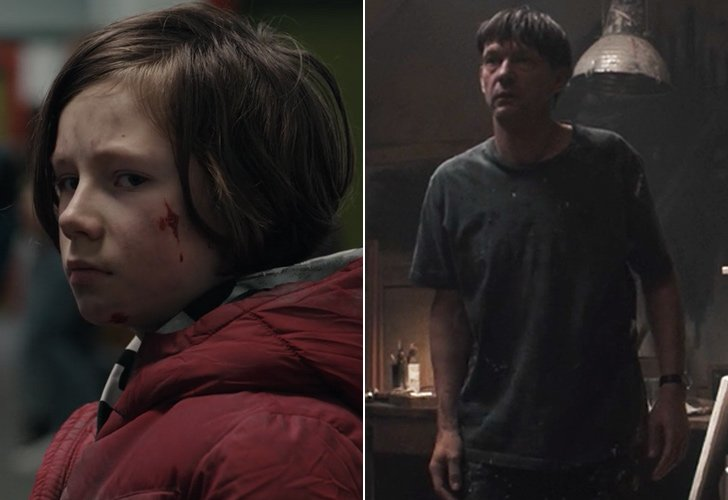
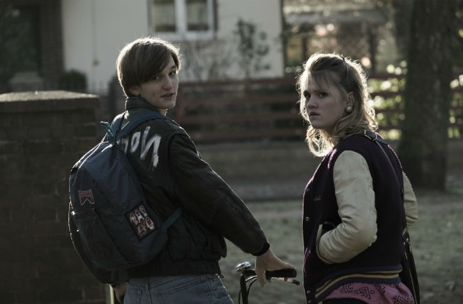
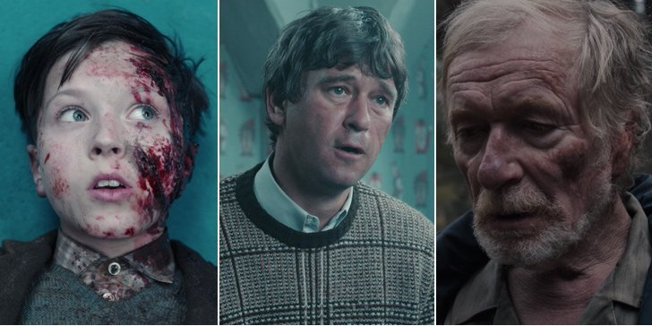
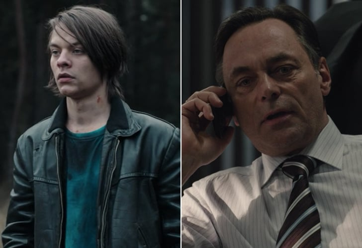
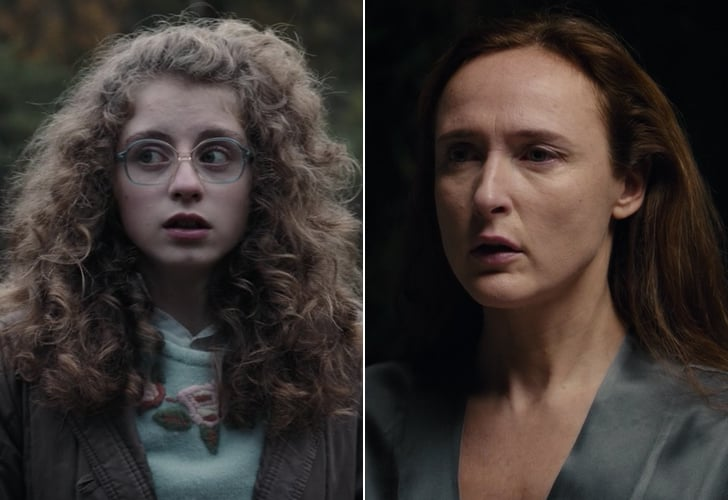
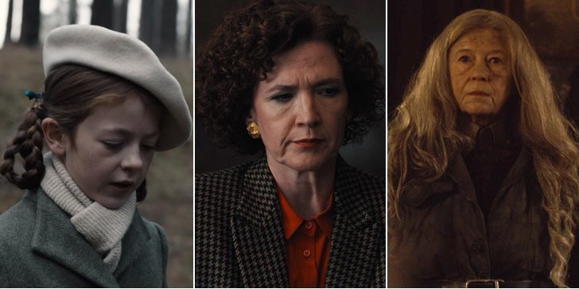
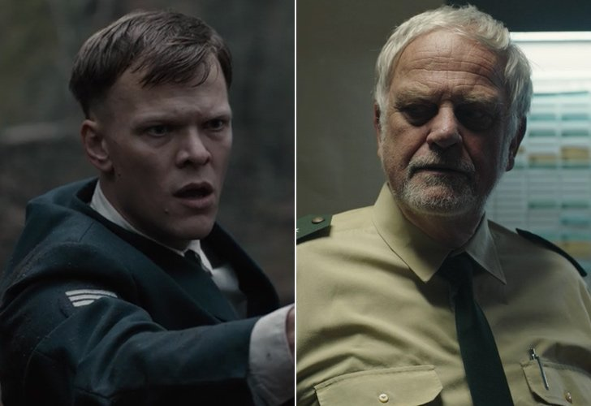
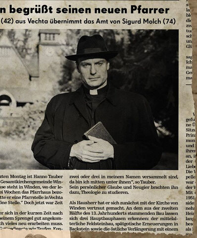

Familia Kahnwald
Jonas Kahnwald
Jonas es hijo de Michael y Hannah Kahnwald. Despues del suicidio de su padre, Jonas fue enviado a un hospital psiquiátrico. Despues de la desaparición de Mikkel Nielsen, Jonas descubre un mapa de las cavernas y recibe un paquete de un extraño, lo que lo lleva a encontrar un agujero de gusano que le permite viajar al pasado.
En 1986, Jonas se encuentra perdido y desorientado hasta que se encuentra con el mismo extraño que le dejo el paquete. En la salida de un Hospital, Jonas ve a Mikkel Nielsen junto a una enfermera. El extraño le explica que Mikkel viajo al pasado y se quedo allí a vivir donde creció para convertirse en el padre de Jonas, Michael Kahnwald. Jonas se encuentra desconcertado ya que si Mikkel es su padre, Martha Nielsen (su amor de 2019), es su tía y Ulrich Nielsen (hombre con quien esta teniendo una aventura su madre) es su abuelo. Jonas intenta acercarse a Mikkael para llevarlo de nuevo a 2019 y que todo vuelva a ser como era antes pero el extraño lo detiene y le explica que si lo hace, interferiría con el curso del tiempo; Mikkel nunca conocería a su madre y por lo tanto el nunca existiría.
Mas tarde, en un intento por ver a Mikkel en el hospital en el que se encontraba, Jonas al abrir la puerta se encuentra con Noah, un cura quien le esta leyendo a la cama a un Mikkel dormido. Antes de que pueda preguntar que esta haciendo o quien es, Hegel llega de atrás para secuestrarlo. Jonas despierta en el cuarto del Bunker donde antes estuvieron todos los niños desaparecidos junto a el aparato que produce los viajes en el tiempo. Del otro lado de la puerta se encuentra el extraño. Jonas le pide ayuda para salir pero el extraño le dice que no puede hacerlo, ya que eso interferiría con el tiempo y el espacio. Confundido, Jonas le pregunta como es que sabe que va a interferir y el extraño le explica que lo sabe ya que el es el mismo Jonas pero del futuro. Cerrando la rejilla de la puerta, Jonas del futuro lo deja encerrado ya que debe ir a terminar con el portal de una vez por todas. Sin embargo, sin saberlo no se da cuenta que al intentar cerrar el portal es lo que en realidad en un comienzo, creo el agujero que permite los viajes en el tiempo. En el momento en el que activa la maquina que creara el portal, se abre un agujero negro. De vuelta al Jonas en el bunker, ve en la pared como se forma un agujero negro y desde donde percibe a Hegel Doppler de niño en 1953 horas después de que fue intentado asesinar por Ulrich. Jonas y Heggel se acercan y en un intento por tocarse las manos, se produce un intercambio en el cual Heggel aparece en 1986 en el bunker donde se encontraba Jonas segundos antes y Jonas se despierta en una calle. Al levantarse, nota que todo esta deteriorado y al comenzar a caminar, se topa con un camión cargado con tripulantes. Jonas desorientado pregunta que paso y en que año esta. Al notar un helicóptero con forma de drone que sobrevuela por encima de ellos, una chica le contesta "Bienvenido al futuro".
Michael Kahnwald
Mikkel Nielsen es hijo de Ulrich y Katharina Nielsen y hermano menor de Magnus y Martha. Nace en 2008 y desaparece en noviembre de 2019, con 11 años.
Una vez viaja de 2019 a 1986, y darse cuenta de que está sólo intenta regresar y se rompe una pierna en las cuevas de Windem. Entonces en el hospital conoce a Hannah y la enfermera Inés lo adopta, cambiando el nombre por Michael Kahnwald. Se suicida antes de la desaparición de sí mismo en 2019.
Hannah Kahnwald
Hannah Kruger se casa con Michael. Juntos tienen a Jonas. En 2019 se queda viuda. Es masajista de Aleksander Tiedemann
Desde pequeña estaba enamorada de Ulrich y en 2019 mantienen un romance.
En 1986, Hannah tenía 14 años y estaba enamorada de Ulrich, entonces el ya estaba con Katharina Nielsen , lo que provocó celos en Hannah. Agitada después de verlos tener sexo en el vestuario, ella le dice a su padre, Sebastian Krüger y luego al oficial de policía Egon Tiedemann , que vio a Ulrich violando a Katharina, lo que llevó a Egon a arrestarlo. Hannah le sugiere a Katharina que fue Regina Tiedemann quien hizo la acusación, lo que llevó a Katharina a atacar a Regina . Hannah observa a Aleksander enterrando una bolsa en el bosque que contiene una pistola y pasaporte, y la recupera en secreto.

Cuando desaparece Mikkel, trata de ver a Ulrich, pero el acaba con su romance. Katharina se entera y va a su casa, y Hannah miente diciendole que a quien amaba era a ella.
En una sesión con Aleksander le chantajea con la bolsa para pedirle que destruya la vida de Ulrich.
Ines Kahnwald
Ines es hija de Daniel Kahnwald, jefe de policia de Windem en 1953.
Es enfermera en el hospital en 1986, donde conoce a Mikkel Nielsen. Se interesa en el y lo adopta como Michael Kahnwald
En 2019 coge la nota de suicidio de Michael y es la primera en leerla. Jonas le pide explicaciones y ella se la enseña.
Familia Nielsen
Mikkel Nielsen
Es el hijo menor de Ulrich y Katherina. Sus hermanos son Magnus y MArtha.
Desaparece en el bosque la noche que sale con sus hermanos, Jonas y Bartosz
Mikkel, despertándose en la cueva, corrio a su casa pero no reconocio a sus residentes; Ulrich lo despide. Observa la fecha en el periodico en la puerta, el 5 de noviembre de 1986, pero no entiende sus implicaciones. Él va a la ciudad a buscar a sus padres; incapaz de encontrar a su madre en la escuela secundaria, va a la estacion de policia para buscar a su padre, donde Egon Tiedemann cree que Ulrich está obligando a Mikkel a participar en una broma.
Al ver los archivos sobre el desaparecido Mads Nielsen en el escritorio de Egon, Mikkel se da cuenta de que está en 1986. Ines Kahnwald , la enfermera, lo lleva al hospital, donde Mikkel le dice que él es del futuro, pero ella no entiende. Huye del hospital por la noche para regresar a las cuevas, pero no puede regresar y se rompe una pierna. Él es devuelto al hospital, donde Inés le presenta a Noah , y tienen una discusión sobre la creación del universo.
Inés finalmente adopta a Mikkel y lo crió como Michael Kahnwald; se quedó en la ciudad, se casó con Hannah y engendró a Jonas. Nunca en casa en su línea de tiempo alterada, se suicidó el 21 de junio de 2019.
Martha Nielsen
Es la hija mediana de Ulrich y Katharina.
Martha tenía un interés romántico con Jonas Kahnwald a principios de 2019 pero, durante su prolongada ausencia de la escuela, comenzó a salir con su amigo Bartosz, después de que Jonas regresara, ella se debate entre los dos, algo que, junto con la desaparición de Mikkel, hace que se vuelva cada vez más triste
Finalmente, llama y se reúne con Jonas en privado durante la obra de teatro en la que Martha está actuando. Hablan de cómo ambas aún tienen sentimientos el uno por el otro, Jonas le confiesa que estaba en tratamiento psiquiátrico en lugar de un programa de intercambio en Francia (como Bartosz le había dicho Sus compañeros de clase) y luego se besan.
Más tarde, ella se enfrenta a Jonas personalmente después de que aparentemente desaparece por unos días. Ahora consciente de su verdadera filiación, Jonas la rechaza sucintamente, ya que no había una manera convincente de describir la imposibilidad de su relación. Triste y enojada por la aparentemente fría respuesta de Jonas, se reconcilia con Bartosz después de contarle sobre su reunión con Jonas.
Magnus Nielsen
Es el hijo mayor de Ulrich y Katharina Nielsen. Tendra un romance con Franziska Doppler.
Ulrich Nielsen
Ulrich es policía en Windem en 2019. Es hijo de Tronte y Jana Nielsen. Está casado con la directora de la escuela Katharina y tienen tres hijos: Magnus, Martha y Mikkel.
Katharina Nielsen
Es directora de la escuela local en Windem. Está casada con Ulrich Nielsen y tienen tres hijos: Magnus, Martha y Mikkel
En 1986 sale con Ulrich. La pareja sospecha de Regina sobre la acusacion de violacion y Katharina la ataca en el bosque.
En 2019 descubre la aventura de su marido con Hannah y se enfrenta a ella. Hannah miente diciendole que Ulrich iba a dejarla. La desaparición de el parece confirmarlo.
Mads Nielsen
Mads es el hijo de Jana y Tronte Nielsen. Su hermano es Ulrich. Le gustaban las chocolatinas Raider y la esgrima.
Desaparece en 1986 con 12 anios, tras acompañar a Regina Tiedemann a su casa, ya que ella temia a Ulrich y Katharina.
Tronte Nielsen
Tronte es el padre de Ulrich y Mads. En 1953 se mudan a Windem el y su madre Agnes a la casa de los Tiedemann. Allí conoce a Claudia, con quien tendra un romance fuera de su matrimonio con Jana
Jana Nielsen
Jana es la madre de Ulrich y Mads, y esta casada con Tronte. No pudo volver a la normalidad después de la desaparición de Mads. Cree que podría seguir vivo. Está mentalmente confundida y a veces ve extraños en el bosque.
Agnes Nielsen
Agnes es la madre de Tronte. Los dos se mudan a la habitación que alquilan en la casa de los Tiedemann en 1953. Es una mujer guapa y bien vestida que vivirá con Doris Tiedemann una atracción mutua.
Agnes le cuenta a Doris que estuvo casada con un pastor y tuvieron a Tronte. Supuestamente su marido está fallecido.También menciona que su abuela era de Windem. Su matrícula del coche sugiere que se mudó de Baja Sajonia.Cuando llega a Windem conoce a Ulrich, su nieto, que viene de 2019 en busca de su hijo.
Familia Doppler
Elisabeth Doppler
Elisabeth es hija de Charlotte y Peter. Es sorda y va a una escuela para sordos. Un día ninguno de sus padres llegan a recogerla y regresa sola a casa y por el camino conoce a Noah, que no la secuestra sino que le entrega un reloj para que se lo de a su madre Charlotte.
A Elisabeth no le caía bien Mikkel Nielsen. Tenía un "novio" que se llamaba Yassin que será secuestrado por Helge y su cadáver lo llevará a las obras de la central nuclear de 1953.
Franziska Doppler
Franziska es la hija mayor de Charlotte y Peter y va a clase con Jonas Bartosz. Va a clases de ballet en el insituto. Odia el pueblo y por eso se gana dinero por su cuenta a cambio de tener relaciones sexuales bajo el puente de las vías del tren.
Cuando Franziska escucha que Erik Obendorf, ya desaparecido, había dejado drogas escondidas en las cuevas de Windem, va a por ellas, pero finalmente Bartosz se las quita a la fuerza.
Charlotte Doppler
Charlotte es la jefa de policía y trabaja junto con Ulrich. Está casada con Peter Doppler y tienen dos hijas Franziska y Elisabeth
Como estudiante en la escuela secundaria de Winden , Charlotte se interesa por el creciente número de aves muertas que encontró, con manchas blancas en sus plumas. Ella los documenta en un cuaderno de bocetos y se lleva los especímenes a casa para ponerlos en el congelador. La recurrencia de este fenómeno en 2019, que también coincide con los niños desaparecidos, la preocupa enormemente.
El 12 de noviembre, mientras Charlotte dibuja un pájaro muerto en su cuaderno de bocetos en el borde del bosque, Jonas Kahnwald (desde 2019) sale de la cueva y le pregunta qué año es. Ella responde 1986 y el niño se va.

Charlotte tiene una personalidad muy seria, de negocios. Muestra esto cuando está interrogando a su Elisabeth sobre su amigo desaparecido Yasin, y nuevamente cuando le pregunta a Peter muchas veces sobre su paradero y la cabaña de Helge. Ella no tiene una buena relación con su esposo o su hija mayor Franziska. Su matrimonio con Peter está en problemas (él ha estado visitando a una prostituta transgénero) , pero siguen casados sin abordar su distanciamiento, para frustración de Franziska.
Charlotte no es conocida por viajar en el tiempo, pero su abuelo fue HG Tannhaus, el autor de "Eine Reise durch die Zeit" ("Un viaje a través del tiempo"), y ella recuerda que le contó sobre el ciclo solar-lunar de 33 años. Los agujeros negros, el Big Bang y otras cosas parecidas. Hacia el final de la temporada 1, comienza a comprender que las personas viajan en el tiempo. Encuentra la foto de Ulrich en un periódico de 1953 en un artículo que describe al niño desaparecido Helge Doppler
Peter Doppler
Peter es el marido de Charlotte. Su padre es Helge Doppler, pero no se sabe nada de su madre. Peter menciona que llegó a Windem en 1987.
Es una persona reservada con muchos conflictos internos. Intenta confesar a Charlotte el suceso del niño muerto que en realidad es Mads, pero nunca lo llega a hacer.
Ejerce de psicólogo y tratará a Jonas Kahnwald tras el suicidio de su padre. Se sabe que Peter le fue infiel a su mujer y que ella descubrió su bisexualidad. Los dos hicieron un pacto que consistió en no hablar del tema y seguir viviendo en la misma casa en familia, pero en dormitorios separados. Peter no volvió a tener relaciones en el último año.
Peter va a la cabaña una noche y desciende al búnker, donde recita la oración de la serenidad. En ese momento se abre el agujero del tiempo y aparece el cuerpo de Mads. Peter llama a Tronte, que llega poco después, seguido de Claudia Tiedemann, quién les convence para llevar el cuerpo al bosque.
Helge Doppler
Helge es hijo de Greta y Bernd. Trabaja como limpiador en la planta nuclear.
Con 9 anios Ulrich Nielsen (del 2019) lo golpea en la cabeza dejandole la cicatriz para toda la vida. Se despierta en el bunker en el momento en que el Jonas del futuro crea un agujero de gusano, y de esa forma Helge viaja a 1986.
Es secuaz de Noah y responsable de los secuestros de Mads y los otros ninios para los experimentos de Noah en los viajes en el tiempo.
Helge de 2019 fallece en un accidente con el Helge de 1986 para evitar que acudiera a la segunda entrevista con Egon.
En 2019, se encuentra en un asilo con demencia. Se escapa varias veces, y en una viaja a 1986 para decirle a su yo del pasado que no continúe haciendo lo que Noah le pide. El Helge del pasado no le hace caso. Fallece en el accidente.
Bernd Doppler
Bernd es el padre de Helge. Es el encargado de fundar la central nuclear y la dirige hasta 1986.
Cuando se retira de su cargo firmemente a Claudia Tiedemann como su sucesor. Confrontado por los informes de Claudia, declara que cree que Claudia es la persona adecuada para encubrir el problema de la planta en la era posterior a Chernobyl. Más tarde le admite a Claudia que hubo un incidente en la central eléctrica.
Cuando se muda de su oficina, Bernd recoge sus pertenencias privadas, incluidas fotos de él mismo, Greta y Helge y otra de Helge adulta. Esto sugiere su afecto duradero por su familia. Sorprendentemente, su presunto nieto, Peter está ausente de las fotos.
En 1986, Bernd está discapacitado y en silla de ruedas, sin embargo, se desconoce la razón de su discapacidad. Bernd vive en la familia Doppler en 1986, aparentemente solo (lo que sugiere que Helge vivía en la cabaña en ese momento). Se desconoce cuándo y cómo se transfiere la casa a los Tiedemann para convertirse en el hotel propiedad de Regina.
Greta Doppler
Greta es la madre de Helge y su marido es Bernd Doppler.En una conversación con Noah, mientras Helge está secuestrado por Ulrich, Greta dice que no está segura de que sea hijo de Berndz
Familia Tiedemann
Bartosz Tiedemann
Bartosz es el mejor amigo de Jonas. Sus padres son Regina y Aleksander Tiedemann.
En 2019, Regina posee y opera el Waldhotel Winden , y Aleksander es el director de la Central Nuclear de Winden . Esto ubica a Bartosz entre la élite adinerada en una ciudad de empleados de centrales eléctricas en su mayoría de cuello azul, pero también lo aísla de sus compañeros. Jonas es su único amigo, y cuando Jonas no está cerca, Bartosz pasa su tiempo solo fumando marihuana y jugando videojuegos. Busca maneras de probarse a sí mismo y encajar.
Cuando Jonas estaba en tratamiento después del suicidio de su padre Michael , Bartosz les dijo a sus compañeros que estaba en un programa de intercambio en Francia, tratando de protegerlo. Al mismo tiempo, se involucró románticamente con Martha Nielsen , quien había sido la novia de Jonas durante el verano.
Después de la desaparición de Erik Obendorf , Bartosz llevó a Jonas y los hermanos Nielsen al bosque cerca de las Cuevas de Winden con la esperanza de encontrar el alijo de drogas de Erik. Cuando llegan, Franziska Doppler ya lo ha "reclamado". Bartosz la toma con fuerza empujándola al suelo. El grupo está asustado por el fuerte rugido que viene de la cueva y se dispersa. Después de eso, recibe una llamada de Noah y, pensando que él es el proveedor de Erik, planea reunirse con él más tarde. Bartosz va solo, sin embargo.
Bartosz se sorprende una tarde al conocer a su abuela, Claudia Tiedemann , a quien había creído muerta. Más tarde se reúne con Noah y, a medida que los eventos han transcurrido según lo previsto desde su primera reunión, acepta hacer lo que él dice. También es posible que Bartosz sea descendiente de Tronte Nielsen debido a que más tarde tuvo un romance con la abuela Claudia de Bartosz.
Aleksander Tiedemann
Aleksander alias Boris es el director de la central de energía nuclear de Windem en 2019. Esta casado con Regina Tiedemann y tiene un hijo Bartosz Tiedemann.
Boris Niewald llega a Windem en 1986. Se encuentra a Ulrich y Katharina pegando a Regina y los espanta con su pistola.
Mas tarde empieza a trabajar en la central nuclear, donde Claudia Tiedemann es la directora en 1986.
Regina Tiedemann
Es hija de Claudia Tiedemann y es propietaria del Waldhotel de Windem. Esta casada con Aleksander y tienen un hijo, Bartosz Tiedemann.
Su madre Claudia es nombrada directora de la central nuclear en 1986. De su padre no se sabe nada, aunque se cree que es Tronte, con quien Claudia tuvo un romance.
En el instituto era el blanco de los matones Ulrich y Katharina. Tras la noticia de la acusacion de violacion contra Ulrich, el y Katharina creen que fue Regina y la intentan atacar. En ese momento Aleksander aparece y la ayuda asustandolos con una pistola.
Regina le consigue una entrevista para la central. Claudia le consigue trabajo allí
Mas adelante Regina se casa con Aleksander, quien se convierte en director de la central en 2019. Ese mismo anio, Regina es diagnosticada con cancer de mama.
Claudia Tiedemann
Claudia es hija de Egon y Doris y es la madre de Regina. Tuvo un romance con Tronte Nielsen, quien pudiera ser el padre de Regina.
Es la mayor oponente de Noah en la guerra por el control de los viajes en el tiempo. Ella está detras de muchos de los sucesos de la historia.
En 1986 fue nombrada directora de la central nuclear. En la cueva adyacente a la central, encuentra a su perro desaparecido 33 añios.Se dio cuenta de que los períodos de tiempo estaban relacionados de alguna manera y comenzó a leer el libro "Un viaje a través del tiempo" de H.G. Tannhaus, que le fue regalado por el hijo de Bernd, Helge, en su primer día de trabajo. Ella se fue de Winden poco después.
Claudia se convirtió en una viajera del tiempo y la oponente de Noah en su guerra de control a lo largo del tiempo, afirmando que su objetivo es evitar la muerte de los niños. Aparentemente estaba aliada con el adulto Jonas Kahnwald. Como anciana en 2052, en el Winden post-apocalíptico, mantuvo una pared de cuerdas en el bunker para seguir la pista de los habitantes de Winden.
La inició en los secretos de la central eléctrica, sobre un incidente en el verano de 1986, y le mostró la entrada al complejo de Winden Cave adyacente a la central eléctrica, que contenía barriles de desechos nucleares. Contrató al recién llegado Aleksander para contener los barriles y soldar una puerta para cerrarla. En la cueva, Claudia se encontró con su perro Gretchen, que había desaparecido hacía 33 años. Se dio cuenta de que los períodos de tiempo estaban relacionados de alguna manera y comenzó a leer el libro "Un viaje a través del tiempo" de H.G. Tannhaus, que le fue regalado por el hijo de Bernd, Helge, en su primer día de trabajo. Ella se fue de Winden poco después.
Claudia se convirtió en una viajera del tiempo y la oponente de Noah en su guerra de control a lo largo del tiempo, afirmando que su objetivo es evitar la muerte de los niños. Aparentemente estaba aliada con el adulto Jonas Kahnwald. Como anciana en 2052, en el Winden post-apocalíptico, mantuvo una pared de cuerdas en el bunker para seguir la pista de los habitantes de Winden. Regresó a 2019 tras una larga ausencia. Claudia se encontró con Tronte Nielsen y Peter Doppler en el búnker, justo después de que Peter vio el cuerpo muerto de Mads Nielsen materializarse ante sus ojos, y les dijo dónde dejar el cadáver para que la policía lo encontrara. Ella reclutó su ayuda y le dio a Tronte el cuaderno de Triquetra. Ella también visitó a su nieto Bartosz, quien creía que estaba muerta, y le regaló una foto vieja como regalo para su madre. Claudia visitó al relojero H.G. Tannhaus en 1953 y le dio planos para el aparato para que pudiera construirlo y Jonas en 1986 podría usarlo para cerrar el agujero de gusano en la cueva y destruir el bucle del tiempo.
Egon Tiedemann
Es el oficial de policía en Windem de 1953. Esta casado con Doris y tienen una hija, Claudia Tiedemann.
Los cuerpos de Erik Obendorf y Yasin Friese son descubiertos y se produce el arresto de Ulrich Nielsen como sospechoso. Ulrich admite el asesinato de Helge Doppler.
Ego y Doris alquilan una habitacion de su casa a Agnes y su hijo Tronte Nielsen.
En 1986, Egon investiga la desaparicion de Mads, y cree que su hermano mayor Ulrich tiene algo que ver.
Tras la falsa acusacion de Hannah Kahnwald de violacion a Katharina, detiene a Ulrich.
Egon entrevista a Helge y le pregunta por que tomo la carretera estatal en lugar del camino directo por el bosque, a lo que Helge no responde y se marcha.
Doris Tiedemann
Doris Tiedemann era la esposa de Egon Tiedemann y la madre de Claudia Tiedemann.En 1953, los Tiedemanns alquilaron una habitación en su casa a Agnes Nielsen y su hijo Tronte , quienes se mudaron a Winden por razones no especificadas. No se menciona cómo entraron en contacto originalmente, pero se demuestra que Doris tiene una atracción por Agnes.
Otros personajes
H.G. Tannhaus

Es un maestro relojero que explica el tiempo, el espacio y los ciclos infinitos en su libro "Un viaje a traves del tiempo".
Según él, los ciclos de tiempo tienen un impacto significativo en el principio de la causalidad, en la relación de causa y efecto. Mientras un agujero de gusano existe, hay un ciclo de tiempo cerrado en el que todo es mutuamente dependiente.
Se cree que es el abuelo de Charlotte Doppler.
Noah
Noah , también conocido con el nombre de Hanno Tauber , fue un sacerdote misterioso que viajó a través del tiempo e influyó en las acciones de las personas en Winden.
Noah creía que estaba trabajando para lograr un propósito mayor: elevar a la humanidad mediante el control del viaje en el tiempo, lo que permitiría reorganizar los eventos y escapar del ciclo predeterminado de sufrimiento. En esta batalla, se vio a sí mismo como una importante figura parecida a un salvador, comparándose a sí mismo y su silla con el bíblico Noé y el Arca. Creía que estaba del lado de la luz mientras que su oponente, Claudia Tiedemann, estaba en el lado oscuro. Aunque era consciente de la crueldad de sus experimentos fatales con los niños, los veía como sacrificios necesarios para el mayor bien.
Él era un sacerdote y expresó su creencia en Dios como un creador del universo, y que Dios tenía un plan para cada ser humano. Aparentemente, también tenía creencias relacionadas con el hermetismo, ya que tenía un tatuaje de la Tablilla Esmeralda en toda su espalda.
Noah estudió teología para convertirse en pastor. Él tenía un pastorado en la ciudad de Vechta. Tomó el puesto de pastor en Winden a la edad de 42 años, bajo el nombre de Hanno Tauber. No está claro si Hanno Tauber es su nombre de nacimiento o no. En 1953, Noah consoló a Greta Doppler cuando su hijo Helge desapareció. En 1986, Noah fue el sacerdote en la parroquia de San Cristóbal y trabajó como consejero en el Hospital Winden. Noah intentó construir una máquina del tiempo en un búnker en el bosque. Su secuaz Helge Doppler lo ayudó a secuestrar a niños pequeños para usarlos como conejillos de indias en el prototipo de la máquina, pero no funcionó como estaba previsto, matando a todos los niños a medida que los transportaba a través del tiempo. Helge no quería seguir secuestrando a más niños, pero Noah lo convenció. Ines Kahnwald invitó a Noah a visitar a Mikkel Nielsen durante la estancia del niño allí. Noah desafió a Mikkel por su creencia en la teoría y evolución de Big Bang. Mirando a su libro para su próximo objetivo, Noah y Helge secuestraron al viajante en el tiempo Jonas Kahnwald, que había venido desde 2019.